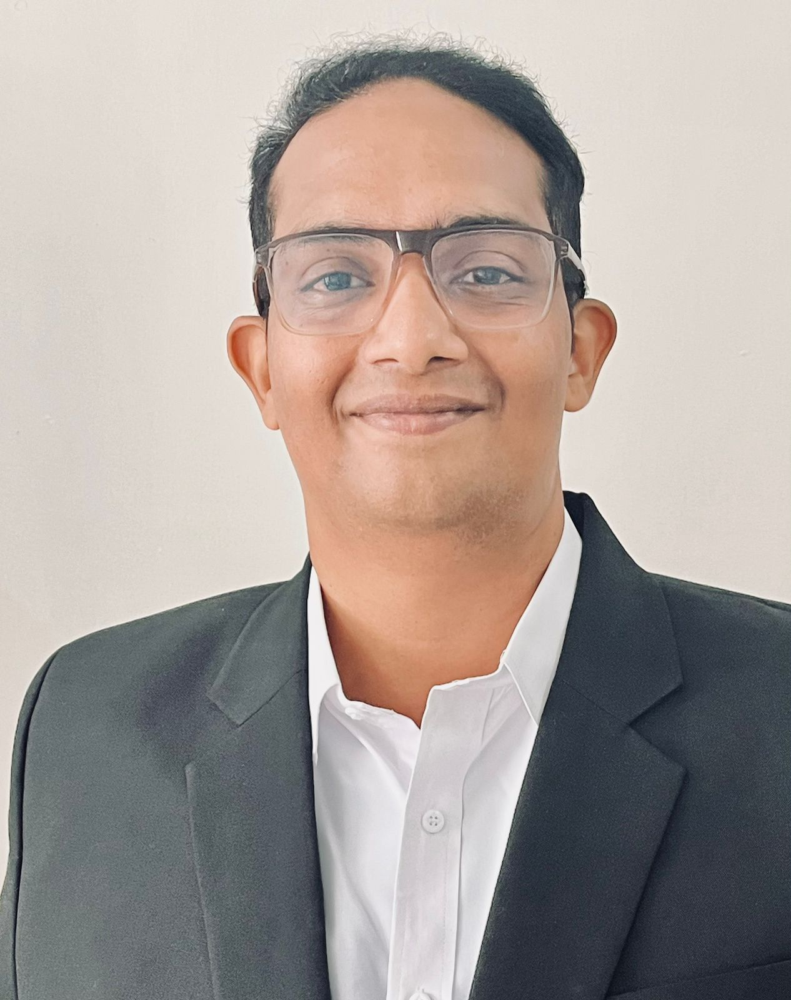

Vinayak Viswanathapillai
Summary
An experienced Senior Business Analyst, Product Manager, and Scrum Master with 12+ years of success in delivering large-scale projects on time and within budget.
Proficient in driving revenue growth through innovative IT solutions, providing insights to business owners, and leading Project/ Product/Program Management teams.
Demonstrates innovative thinking, dedication, and leadership. Seeking a senior IT role with a focus on gaining overseas experience.
Education
- MBA-FT(Fulltime)-Marketing from IGNOU
- Bachelor of Arts(BA)-Geography from University of Calicut
Work Experience
- Senior Business Analyst(Lead)
- Techversantinfotech, Kochi and Trivandrum
- Responsibilities
- As a Product Manager/Owner with a second role as an AGILE Scrum Master,
collaborated with stakeholders to define system requirements and goals
- Lead scrum processes such as user story grooming and sprint planning, facilitated workshops, mentors junior staff,
and ensures efficient documentation and presentation of proposals and requirements
- Business Analyst
- Factweavers Technologies, Kochi
- Responsibilities
- Collaborated with stakeholders to determine financial, business, and operational requirements, while ensuring alignment with SCRUM principles.
- Contributed in verifying and improving system efficiency and effectiveness, conducting system analyses, and providing strategic insights.
- Keeping up the additional role of AGILE Scrum Master Roles, facilitated user story grooming, conducting workshops, and overseeing documentation and presentation preparation for projects.
- Senior Business Analyst(Lead)
- Microobjects, Kochi
- Responsibilities
- Evaluated hardware and software to meet end user demands and documenting reports on system improvements.
- Provided strategic guidance through cost- benefit analyses and offers counseling sessions to junior executives.ents
-
Supervised requirement elicitation, documentation, and facilitating workshops to ensure efficient project delivery.
- Functional Business Analyst Cum Test Engineer
- Krossark,Chennai
- Responsibilities
- Gathered and analyzed requirements, preparing presales.
- Prepared documents, and conducting workshops.
- As an AGILE Scrum Master, I was responsible for facilitating agile ceremonies such as grooming user stories and conducting UAT.
- Supervised the QA process and the project management processes.
- coaches the team, ensures effective test processes, and seeks continuous improvement through techniques like Root Cause Analysis.
- Business Consultant
- Sysglob Solutions Private Limited,Kochi
- Responsibilities
- Proficient at gathering requirement gathering, creating presales documents, and lead workshops.
- Managed project documentation such as BRDs, PRDs, SRS, and FRS, as well as facilitate user story grooming and UAT.
- In addition, I was responsible for developing test coverage documentation and metrics reports, teaching the team, and guaranteeing successful test procedures through approaches like as black box testing and automation. Actively pursues continuous improvement using methodologies like Root Cause Analysis.
- Product Engineer cum GIS Engineer (GIS)
- NeSTDigital,Kochi
- Responsibilities
- Proficient in requirement elicitation and presales document development, including workshop facilitation.
- Experienced in developing strategies for delivering business cases and leading inbound sales and product presentations. Also skilled in leading GIS data teams, performing QA/QC checks, and supervising pilot GIS analytic projects.
- Additionally, I work as a Product Engineer and Client Relationship Engineer for IFAME, a GIS solution for SMEs.
- As a Scrum Master, I am responsible for supporting efficient communication and collaboration within the team, as well as ensuring that
AGILE principles are followed during the requirement elicitation and presales processes
- Also responsible for conducting seminars and leading the team in developing ways for presenting business cases. Furthermore, it helps QA/QC verification and pilot GIS analysis projects, promoting continuous improvement in project delivery through AGILE processes.
- GIS Associate(GIS)
- First American Coorperation, Mangalore
- Responsibilities
- Proficient in requirement elicitation and presales document development, including workshop facilitation.
- Experienced in developing strategies for delivering business cases and leading inbound sales and product presentations. Also skilled in leading GIS data teams, performing QA/QC checks, and supervising pilot GIS analytic projects.
- Additionally, I work as a Product Engineer and Client Relationship Engineer for IFAME, a GIS solution for SMEs.
- As a Scrum Master, I am responsible for supporting efficient communication and collaboration within the team, as well as ensuring that
AGILE principles are followed during the requirement elicitation and presales processes
- Also responsible for conducting seminars and leading the team in developing ways for presenting business cases. Furthermore, it helps QA/QC verification and pilot GIS analysis projects, promoting continuous improvement in project delivery through AGILE processes.
Skills
- Technical Skills
- Wireframing in Figma, Justin Mind, MockPlus, Draw.io, Canva, Microsoft Visio
- UI Prototyping with Prompt Engineering
- Generative AI tools- ChatGPT, Gemini AI, Midjourney, Copilot, Dall-E2
- Microsoft Office Suite
- Google Suite
- Atlassian Suit- Jira, Confluence, Bitbucket
- Project Management in Azure DevOps- Azure Boards
- HTML5, CSS3/SCSS, JavaScript
-
Managerial Skills
- Domain Knowledge– IT/ SDLC, Healthcare, Ed-Tech, Logistics, E-commerce, Retail, ERP, Gamification
- Agile Project Management
- Scrum Master
- Business Analysis
- UI/UX Analyst
- QA Analyst
-
Linguistic Skills
- English - Professional
- Malayalam (Native)
- Deutsch - Intermediate
- Tamil - Intermediate
- Hindi – Intermediate
Liscences and Certifications
- PG Diploma in GIS /GIS Business Analyst programmed: Udemy
- Certification Course for Automation and Manual Testing: Udemy
- Professional Diploma in Agile and Project Management: Udemy
- Agile Project Management Certification: Coursera
- Google Project Management: Google/ Coursera
Hobbies
- Image and Video content creation with AI
- Pencil Sketching, Photography
- Travelling, Motorcycle riding
Contact Me